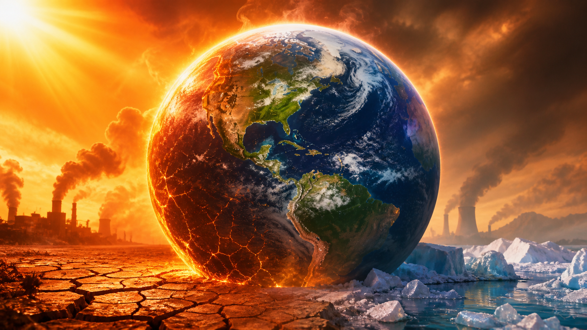

MANŞET
Dünya’nın ateşi çıkıyor
Küresel ısınma hızlanıyor. Aşırı hava olayları artıyor, buzullar eriyor, deniz seviyesi yükseliyor, kuraklık daha sık ve şiddetli yaşanıyor. Gezegenimiz alarm veriyor; harekete geçme zamanı şimdi.
◔ 25 Mayıs 2025